節分祭を見に物部神社に行きました。
2024/02/03
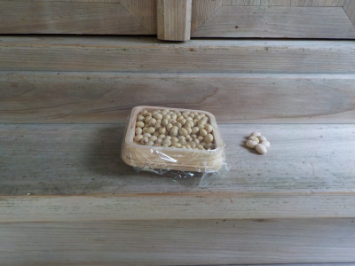
テレビなんかでよく見る節分の豆まきが見たくて、物部神社に行きました。
節分なので、あつこちにお豆が供えてありました。
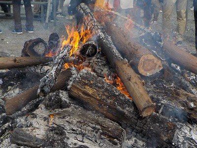
境内では御札などが焚き上げされていました。
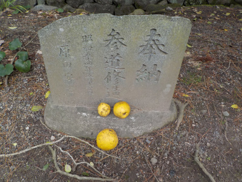
カリンの木があり、実があちこちに転がっていました。
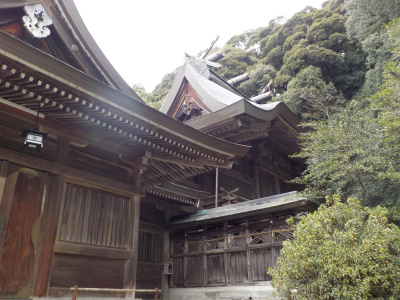
今日は地元の方が多かったので、本殿の横とかは空いていました。
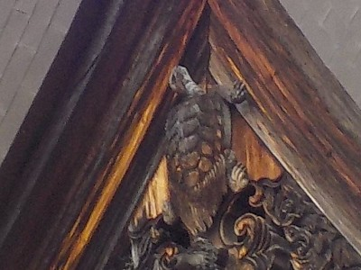
本殿の上にいる亀です。物部神社に来たらこれを見ないとって思って見ました。
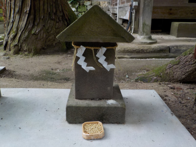
ここには色んな形の祠があります。
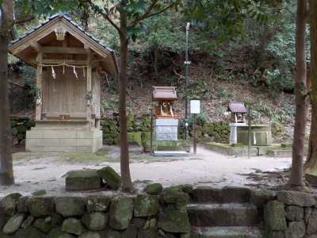
祠の数も多いです。
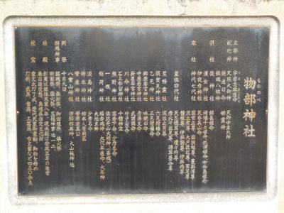
石板には神様沢山書かれていました。興味のあるかたはそれぞれ見られるんでしょうね。
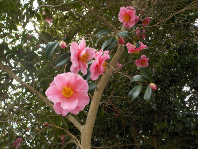
花も綺麗に咲いていました。節分以外も楽しめて良かったです。
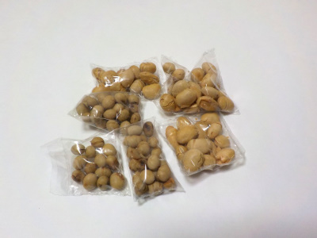
豆まきで拾った豆です。手作りでパックされたみたいですね。
ありがたくいただきました。
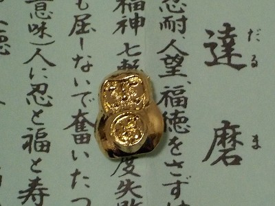
鶴のおみくじを引こうと思いましたが、2種類あって迷ったので別の小さな御守の入ったおみくじにしました。
くじからはダルマが出ました。財布に入れて持ち歩きます。
節分厄除けお菓子、恵方巻、ネギ、蕎麦等の販売や、屋台が出ていて買い物も楽しかったです。また行きたいです。